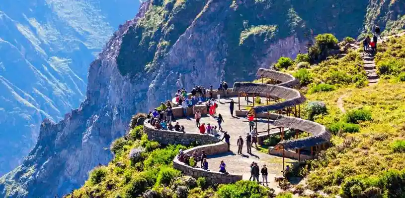
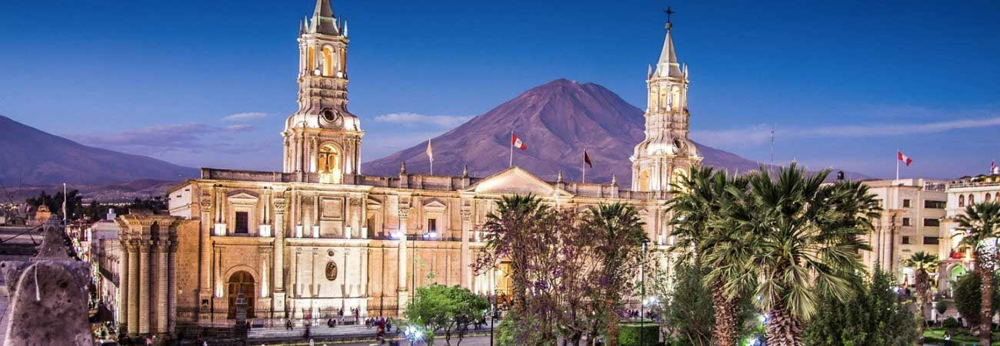

Arequipa es la capital de la provincia y departamento homónimos, así como la segunda ciudad más poblada del Perú. Desde el punto de vista político, es la sede oficial del Tribunal Constitucionaly es considerada como la «Capital Jurídica del Perú».La ciudad también es conocida como La Ciudad Blanca o el León del Sur. Está ubicada en la región sur del país, la ciudad se extiende a ambas orillas del río Chili, en el denominado valle de Arequipa o valle de Chili, el cual está protegido al norte y al este por la faja cordillerana andina y hacia el sur y oeste por las cadenas bajas de cerros costeños. La proyección censal para el año 2023 estableció una población de 1 157 500 habitantes.Su área metropolitana la conforman veintiún distritos conurbados. El lugar donde se asienta la ciudad fue fundado el 15 de agosto de 1540. En aquel entonces, se le denominó «Villa Hermosa de Nuestra Señora de la Asunta». El 25 de septiembre de 1541 a través de una Cédula Real dictada por el monarca Carlos V pasó a denominarse «Ciudad de Arequipa». En el periodo virreinal, adquirió importancia por su sobresaliente papel económico y por su fidelidad hacia la Monarquía Española.Es la segunda ciudad más industrializada y con mayor actividad económica en Perú.
|  |  | |